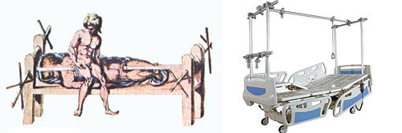

你好，欢迎来到《医学通识50讲》，我是薄世宁。
从这节课开始，咱们今天进入新的模块。这一模块，介绍对医学做出过突出贡献的大医生。
但是，太多医生值得学习了。所以，我从贡献、精神、理念改变三个角度，找到具有代表性的几位医生，看看这些医生如何推动了医学的发展。
这节课介绍第一位医生，他是被称为“西方医学之父”的希波克拉底医生。
希波克拉底知名度高，你可能听过他的名字。但是，他到底怎么伟大呢？
还有可能，你知道他是因为一个誓言——《希波克拉底誓言》。这个誓言为什么历经2500年，到今天还在用呢？
事实上，我们对于希波克拉底知之甚少。
今天看到的《希波克拉底文集》，其实是很多医生作品的合集。所以更确切地说，希波克拉底这个名字是古代医生的典范，这个名字更是那个年代一种医学学派的名称。
希波克拉底之所以伟大，首先要从医学的诞生讲起。
医学职业诞生的三大标志
有了人类，就逐步有了医学。医学起源的初衷，就是人与人之间的救助。当这种救助越来越专业化的时候，自然也就形成一门职业。
但是在科学不发达的以前，巫和医却是不分的。巫师也从事给人看病的事，医生也用一些巫术治病。
这种状况一直持续到公元前5世纪，也就是距离今天2500多年前，相当于中国的春秋战国时期。
古希腊爱琴海东南部有个小岛，叫做科斯岛。
科斯岛在一个海湾的入口处，优越的地理位置利于航海，所以那里的贸易繁荣，经济发达。酿酒、冶炼、造船、建筑这些行业发展非常迅速。
生产力的发展带来了体力劳动和脑力劳动的分工，这种氛围给西方医学的诞生提供了条件。希波克拉底就出生在这个岛上。
先讲个传说。
有一天，在科斯岛的市场上突然有人倒地，意识不清，手脚抽动，口吐白沫。
你应该猜到这个人是怎么了，就是癫痫，也就是咱们平时说的羊角风。
这个时候，有个人挤出人群，他说：“我知道，这个人中邪了，一定是冒犯了神鬼。咱们大家快把他抬到神庙去，祈求神灵饶恕就好了。”
今天的医学已经搞清楚了癫痫，它的病理基础是大脑的神经元突然异常放电，导致短暂的大脑功能异常。所以，病人会出现抽搐，意识丧失。等到神经元恢复正常放电了，病人也就好了。
为什么要讲这个病呢？
因为，癫痫是检验巫术还是医学的试金石。
巫医怎么解释呢？
既然这个病大家都说不明白，而且多数病人抽搐一会儿自然就好了。巫医就会说：“你们看，这是神鬼惩罚，念咒语就好了。”
过段时间病人再犯病，巫医还会说：“你们看，这个人不听话，又得罪神灵了。”
凡是没办法证伪的领域，就一定充斥着各种解释。
大家刚要把病人往神庙里抬的时候，有个年轻人大声喊道：“这样不对，这个人是大脑出了问题，根本不是什么神鬼惩罚。当务之急是赶紧给他嘴里塞上布，免得咬伤了舌头。过一会儿自然也就好了。”
这个人就是希波克拉底。
他刚给病人嘴里塞好布，病人就恢复了意识。这个时候，围观的百姓欢呼起来。巫师仓皇而逃。
从此，希波克拉底名声大震，他的行医生涯遍布了科斯岛以及岛外很多地区。
这个传说是否真实并不重要，重要的是，这个故事让我们理解医学和巫术的区别。
废除巫术，确立医学，让医生成为一门独立职业的人，就是希波克拉底。他因此被称为“西方医学之父”。
医学作为一门职业，诞生有三个标志：
1. 疾病观形成；
2. 治疗技术出现；
3. 行业规则确立。
首先，疾病观的意思是怎么看待病，怎么找病因。
思想体系是任何一个学科的立足之本，疾病观就是医学的思想体系。
在希波克拉底之前，神鬼疾病观认为病都是神鬼引起的。最典型的就是刚才说到的癫痫，还有精神疾病。巫师们认为是神鬼惩罚，鬼钻到人的脑子里了。所以，突然出现了解释不清的症状。
而希波克拉底认为病是自身问题，是体液不平衡。
他的四体液学说，认为四种体液包括血液、粘液、黄胆汁、黑胆汁，如果体液平衡，人就健康，如果不平衡，人就病了。
尽管这种四体液学说也缺乏科学基础，但是它的伟大之处在于，从此以后，人们开始从自身找病因，把人从神鬼的桎梏中解救出来。
希腊文明对于世界的贡献，就是“理性”二字。
有了疾病观，自然带来了医学诞生的第二个标志——治疗技术出现。
什么样的疾病观，也就带来什么样的治疗技术。
在神鬼疾病观思想的指导下，治疗方法就是驱鬼、祈福、祈祷、祭祀等等。
希波克拉底认为疾病是由于体液不平衡，那自然也就带来了食疗、导泻、催吐、放血、植物、动物毛骨，以及用矿物质来治病的方法。因为在他看来，这些方法都能调节体液。
尽管在今天，这些原始的方法多数都不用了，但是今天很多医疗技术的原型，在那个年代就已经出现了。
比如，治疗肩关节脱臼的病人，现在用的让脱臼复位的原理，依然是源于希波克拉底时代。他当时设计出了一种用于牵引固定的床。

再比如，希波克拉底提出医生要认真观察病情，详细记录包括病人的症状、体征、治疗的反应等信息。
更可贵的是，在希波克拉底的著作里，还记载了他失败的案例。这样的病历同样具有极高的价值，而且体现了实事求是的态度。
《希波克拉底誓言》与医生的职业自律
我认为，有了疾病观，医疗技术出现只是早晚问题，这些固然都是希波克拉底对医学的贡献。
但我想说的是，纵使再有技术，也很难诞生一门独立的职业，技术只能诞生手艺人。
因为一个行业或者职业，如果缺乏行业规则，而是让每个从事者自生自灭，那么一定不会得到规范、理性的发展。
在我看来，希波克拉底更伟大的地方，就在于这节课要讲的第三点——行业规则的确立。
希波克拉底前瞻性地预见到了医生这个职业可能面临的风险——在信息不对称的情况下，掌握信息的人，很可能利用信息优势牟取私利。
尤其是在今天快速发展的医学领域。
一个人要经过几年甚至十几年的职业训练，才能成为一名医生，而且工作后每天都要学习。
大量的信息构成了医生服务病人的基础。医学科学高度专业化，分科也越来越细。这个科的医生也未必能确切地掌握其他科的信息进展。
这种信息对于外行人，就是一道极高的门槛。
医生和病人之间，是一种信息不对称的状态。所以，如果没有一个机制约束医生的行为，就会有道德风险，医生很可能利用知识不当获利。
在2500年前，希波克拉底就用誓言的形式制定出了行业规则。
有了疾病观，有了相应的技术，又有了行业规则，医生才成为了一门独立的职业。
在西方很多国家，医学生入学或者毕业即将开始职业生涯的时候，要宣读《希波克拉底誓言》。
中国虽然没有照搬这个誓言，但是医生、护士都有着各自的誓言。同样用宣誓的形式，承诺职业规范。
誓言的第一版原文比较长，以下为节选的关键部分：
这个誓言可以概括为四个方面：尊重老师；不伤害病人；不以职业谋私；隐私保密。
其实，这个誓言不正是很多职业必须坚守的职业规范吗？
比如教师、律师、法官、会计师、审计师等等，这些以技术为主要服务形式的职业，是不是都可以参照这个誓言呢？
所以，希波克拉底伟大之处不只是把医生从巫师中分离，确立了医学，而是意识到了职业诞生的危险，并且奠定了职业伟大的传统——自律。
自律不是医生个人的道德品质，而是这个行业的职业要求。这就是医学诞生的第三个标志——群体自律和行业规则。
但是客观地说，这个誓言具有一定的时代局限性。
1948年，世界医学会在这个誓言的基础上进行了修改，制定了正式作为医生行业道德规范的《日内瓦宣言》。以后每隔10年重新评估、修改，以符合时代进步。
到今天，《希波克拉底誓言》已经经过了8次修改。
除了行业自律的誓言之外，各个国家也制定出各种法律、规范、指南，让医疗这个行为越来越规范。一个掌握信息优势的技术群体，必须严格自律、不伤害、不谋私，才能真正地履行职责。
历经2500年，这个誓言依旧有着它伟大的价值和意义。无论医学如何发展，也不论时空如何转换，医学的精神永远不会变。
思考题
在你的行业里，有哪些特别的制度设计呢？欢迎在评论区留言，和大家一起交流。
下节预告
实践为什么成为医学的核心理念？下节课我们介绍一位实践精神的代表人物——威廉·奥斯勒。